Overview
GradBoostR provides regression and binary-classification
models implemented with Rcpp and
RcppArmadillo. The package includes random forest
regression, gradient boosting regression, neural network regression,
decision stumps, and fast binary random forest classification.
The main regression interface consists of:
-
gradboostr_fit(), which fits a model; -
gradboostr_predict(), which generates predictions from a fitted model.
The method argument selects the regression engine:
method = "rf"
method = "gbm"
method = "nn"Specialized lower-level functions include fit_stump(),
rf_class_fit_fast(), rf_class_predict_fast(),
and rf_class_predict_prob_fast().
This vignette demonstrates a complete workflow:
- generate reproducible regression data;
- fit baseline regression models;
- examine prediction errors and residual diagnostics;
- tune model hyperparameters using cross-validation;
- compare out-of-fold regression errors;
- fit a decision stump;
- evaluate binary classifiers using held-out observations;
- visualize hard-class regions and class probabilities.
Training-set diagnostics are presented to explain model behavior. Cross-validated and held-out results are used when discussing predictive performance.
Regression workflow
Regression data
The regression examples use a synthetic data set with three
predictors. The response depends primarily on X1, has a
smaller negative contribution from X2, and includes
normally distributed noise. X3 does not contribute directly
to the response and therefore acts as an uninformative predictor.
set.seed(864)
n_reg <- 120L
X_reg <- cbind(
X1 = rnorm(n_reg),
X2 = rnorm(n_reg),
X3 = rnorm(n_reg)
)
y_reg <- (
2.0 * X_reg[, "X1"] -
0.5 * X_reg[, "X2"] +
rnorm(n_reg, sd = 0.7)
)
regression_data <- data.frame(
X1 = X_reg[, "X1"],
X2 = X_reg[, "X2"],
X3 = X_reg[, "X3"],
Response = y_reg
)
head(regression_data, 8)
#> X1 X2 X3 Response
#> 1 0.8259430 -1.21770927 0.79702852 2.72873606
#> 2 1.6837055 -0.40938819 0.96225350 4.21391230
#> 3 -2.9104891 0.09768491 0.17461701 -5.31318501
#> 4 1.8750856 0.14468638 0.02812713 3.53754995
#> 5 0.6510606 1.66285955 -1.69835956 0.01615669
#> 6 -0.7975370 0.01234072 0.45650717 -1.21428786
#> 7 1.1283158 0.69479572 -0.73021125 2.07743833
#> 8 0.7023991 -1.05993568 -0.29250443 0.59055968
ggplot(regression_data, aes(X1, Response)) +
geom_point(alpha = 0.7, colour = "steelblue") +
geom_smooth(
method = "lm",
formula = y ~ x,
se = FALSE,
colour = "firebrick",
linewidth = 0.8
) +
theme_minimal(base_size = 12) +
labs(
title = "Synthetic Regression Data",
subtitle = "The response contains a strong contribution from X1",
x = "X1",
y = "Response"
)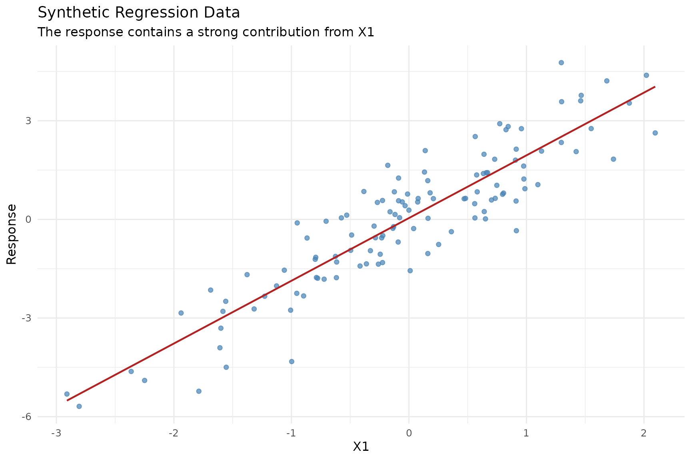
Helper functions
Two local helper functions support the regression examples.
rmse() calculates root mean squared error.
scale_train_validation() standardizes a training matrix and
applies the same center and scale to a validation matrix. Calculating
preprocessing statistics from the training fold prevents information
from the validation fold from leaking into model fitting.
rmse <- function(actual, predicted) {
sqrt(mean((actual - predicted)^2))
}
scale_train_validation <- function(training_data, validation_data) {
training_center <- colMeans(training_data)
training_scale <- apply(training_data, 2, sd)
training_scale[!is.finite(training_scale) | training_scale == 0] <- 1
scaled_training <- sweep(training_data, 2, training_center, FUN = "-")
scaled_training <- sweep(scaled_training, 2, training_scale, FUN = "/")
scaled_validation <- sweep(validation_data, 2, training_center, FUN = "-")
scaled_validation <- sweep(scaled_validation, 2, training_scale, FUN = "/")
list(train = scaled_training, validation = scaled_validation)
}Baseline regression models
The baseline models are fitted to the complete regression data. Their training errors describe fitted-model behavior, not expected performance on unseen observations.
Random forest regression
Random forest regression combines predictions from an ensemble of randomized trees.
rf_reg_model <- gradboostr_fit(
X_reg,
y_reg,
method = "rf"
)
rf_reg_prediction <- as.vector(
gradboostr_predict(
rf_reg_model,
X_reg,
type = "response"
)
)
stopifnot(
is.numeric(rf_reg_prediction),
length(rf_reg_prediction) == nrow(X_reg),
all(is.finite(rf_reg_prediction))
)
rf_reg_rmse <- rmse(y_reg, rf_reg_prediction)
rf_reg_rmse
#> [1] 0.4590821Gradient boosting regression
Gradient boosting builds an additive ensemble sequentially. The
learning_rate controls the contribution from each fitted
tree, while n_trees controls the number of boosting
iterations.
gbm_model <- gradboostr_fit(
X_reg,
y_reg,
method = "gbm",
learning_rate = 0.1,
n_trees = 50
)Neural network regression
Neural networks can be sensitive to differences in predictor scale.
The predictors are therefore standardized before fitting. The fitted
model uses one hidden layer. hidden controls the number of
hidden units, epochs controls the number of training
iterations, and learning_rate controls the update size.
X_reg_scaled <- scale(X_reg)
set.seed(273)
nn_model <- gradboostr_fit(
X_reg_scaled,
y_reg,
method = "nn",
hidden = 10,
epochs = 50,
learning_rate = 0.01
)
nn_prediction <- gradboostr_predict(
nn_model,
X_reg_scaled,
type = "response"
)
stopifnot(
inherits(nn_model, "gradboostr_model"),
identical(nn_model$method, "nn"),
is.numeric(nn_prediction),
is.null(dim(nn_prediction)),
length(nn_prediction) == nrow(X_reg_scaled),
all(is.finite(nn_prediction))
)
nn_rmse <- rmse(y_reg, nn_prediction)
nn_rmse
#> [1] 2.107537In-sample model diagnostics
Gradient boosting diagnostics
The gradient boosting prediction API should return one finite numeric prediction for each observation. Prediction error is defined as observed response minus predicted response. Positive errors indicate underprediction, while negative errors indicate overprediction.
gbm_prediction <- as.vector(
gradboostr_predict(
gbm_model,
X_reg,
type = "response"
)
)
stopifnot(
inherits(gbm_model, "gradboostr_model"),
identical(gbm_model$method, "gbm"),
is.numeric(gbm_prediction),
is.null(dim(gbm_prediction)),
length(gbm_prediction) == nrow(X_reg),
all(is.finite(gbm_prediction))
)
gbm_prediction_error <- y_reg - gbm_prediction
gbm_absolute_error <- abs(gbm_prediction_error)
gbm_squared_error <- gbm_prediction_error^2
gbm_rmse <- sqrt(mean(gbm_squared_error))
gbm_mae <- mean(gbm_absolute_error)
gbm_mean_error <- mean(gbm_prediction_error)
gbm_median_error <- median(gbm_prediction_error)
gbm_error_summary <- data.frame(
Metric = c(
"Mean error",
"Median error",
"Mean absolute error",
"Root mean squared error",
"Error standard deviation",
"Minimum error",
"Maximum error"
),
Value = c(
gbm_mean_error,
gbm_median_error,
gbm_mae,
gbm_rmse,
sd(gbm_prediction_error),
min(gbm_prediction_error),
max(gbm_prediction_error)
)
)
knitr::kable(
gbm_error_summary,
digits = 4,
caption = "Gradient boosting training-error diagnostics"
)| Metric | Value |
|---|---|
| Mean error | 0.0000 |
| Median error | -0.0105 |
| Mean absolute error | 0.5952 |
| Root mean squared error | 0.7449 |
| Error standard deviation | 0.7481 |
| Minimum error | -1.7100 |
| Maximum error | 1.9131 |
gbm_diagnostic_data <- data.frame(
Observed = y_reg,
Predicted = gbm_prediction,
Error = gbm_prediction_error
)
ggplot(gbm_diagnostic_data, aes(Observed, Predicted)) +
geom_point(alpha = 0.7, colour = "darkorange") +
geom_abline(
intercept = 0,
slope = 1,
colour = "firebrick",
linetype = "dashed",
linewidth = 0.8
) +
coord_equal() +
theme_minimal(base_size = 12) +
labs(
title = "Gradient Boosting Observed versus Predicted Values",
subtitle = paste(
"Training RMSE =", round(gbm_rmse, 4),
"| MAE =", round(gbm_mae, 4)
),
x = "Observed",
y = "Predicted"
)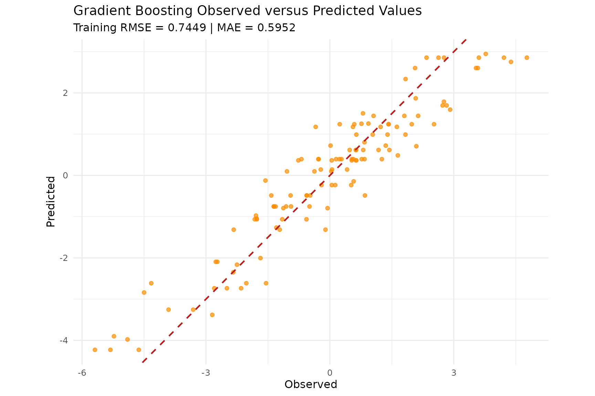
Points close to the dashed diagonal line represent predictions close to the observed responses.
ggplot(gbm_diagnostic_data, aes(Predicted, Error)) +
geom_hline(
yintercept = 0,
colour = "firebrick",
linetype = "dashed",
linewidth = 0.8
) +
geom_point(alpha = 0.7, colour = "darkorange") +
geom_smooth(
method = "loess",
formula = y ~ x,
se = FALSE,
colour = "black",
linewidth = 0.8
) +
theme_minimal(base_size = 12) +
labs(
title = "Gradient Boosting Residual Diagnostic",
subtitle = "The black curve highlights systematic error patterns",
x = "Predicted",
y = "Prediction error (observed - predicted)"
)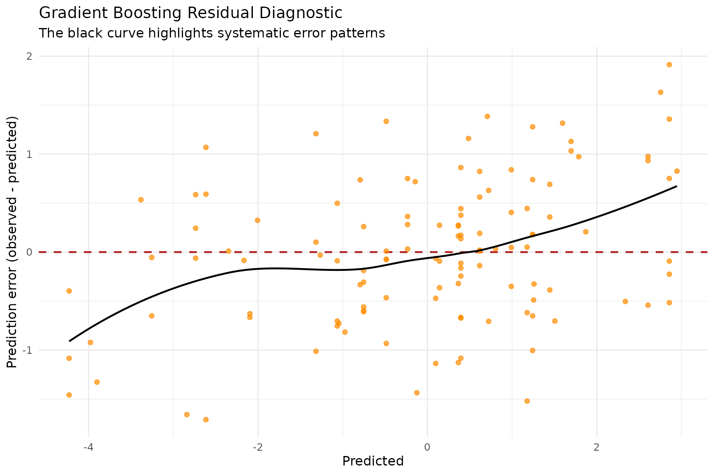
Residuals distributed around zero without a clear pattern indicate limited systematic error. Curvature in the smoothed line can indicate structure that remains unexplained.
ggplot(gbm_diagnostic_data, aes(Error)) +
geom_histogram(
bins = 20,
fill = "darkorange",
colour = "white",
alpha = 0.85
) +
geom_vline(
xintercept = 0,
colour = "black",
linetype = "dashed",
linewidth = 0.9
) +
geom_vline(
xintercept = gbm_mean_error,
colour = "firebrick",
linewidth = 0.9
) +
theme_minimal(base_size = 12) +
labs(
title = "Gradient Boosting Prediction-Error Distribution",
subtitle = paste(
"Mean error =", round(gbm_mean_error, 4),
"| Median error =", round(gbm_median_error, 4)
),
x = "Prediction error (observed - predicted)",
y = "Count"
)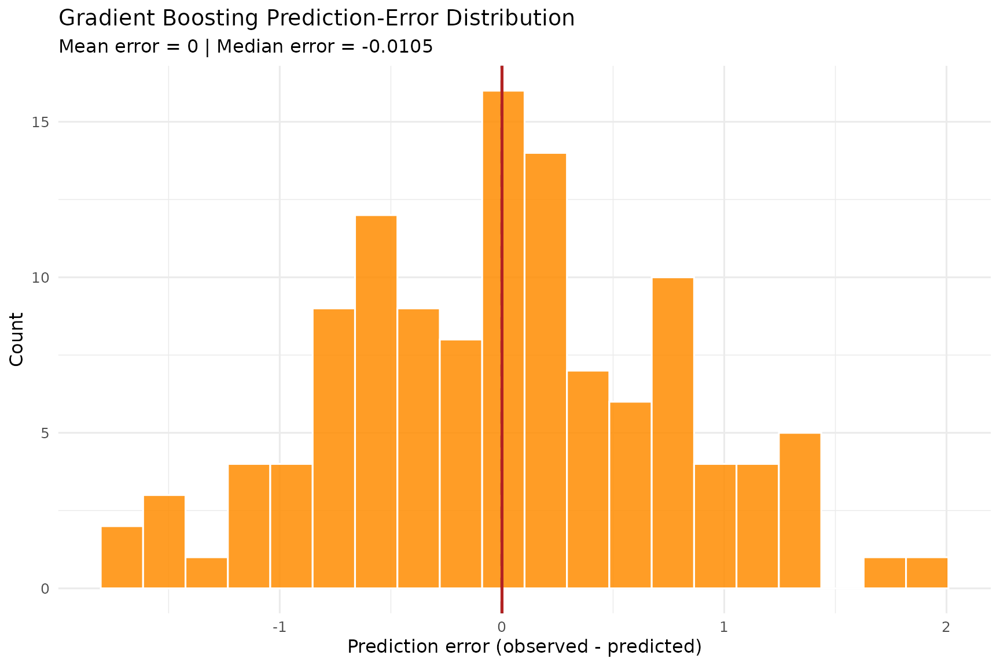
ggplot(gbm_diagnostic_data, aes(sample = Error)) +
stat_qq(alpha = 0.7, colour = "darkorange", size = 1.8) +
stat_qq_line(
colour = "firebrick",
linetype = "dashed",
linewidth = 0.8
) +
theme_minimal(base_size = 12) +
labs(
title = "Gradient Boosting Residual Q-Q Plot",
subtitle = paste("Residual SD =", round(sd(gbm_prediction_error), 4)),
x = "Theoretical normal quantiles",
y = "Observed residual quantiles"
)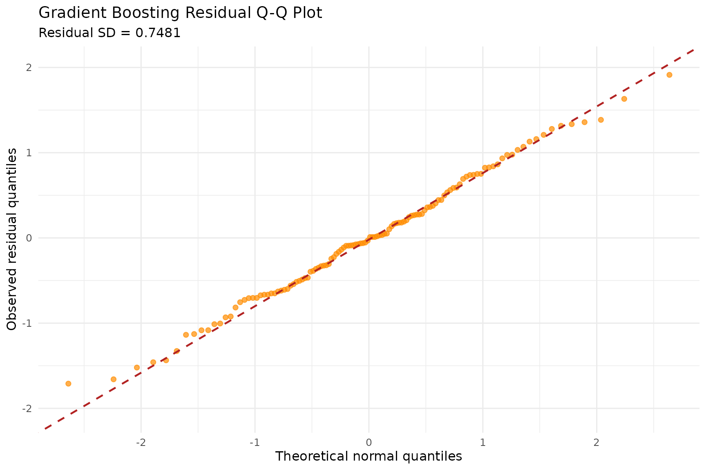
The Q-Q plot is descriptive. Departures from the reference line can reveal skewness, heavy tails, or isolated large errors.
Neural network diagnostics
The following diagnostics examine the neural-network training errors. Residual normality is not required by the neural-network algorithm; the Q-Q plot is included only as a descriptive view of the error distribution.
nn_diagnostic_data <- data.frame(
Observed = y_reg,
Predicted = nn_prediction,
Error = y_reg - nn_prediction
)
ggplot(nn_diagnostic_data, aes(Observed, Predicted)) +
geom_point(alpha = 0.7, colour = "dodgerblue3") +
geom_abline(
intercept = 0,
slope = 1,
colour = "firebrick",
linetype = "dashed",
linewidth = 0.8
) +
coord_equal() +
theme_minimal(base_size = 12) +
labs(
title = "Neural Network Observed versus Predicted Values",
subtitle = paste("Training RMSE =", round(nn_rmse, 4)),
x = "Observed",
y = "Predicted"
)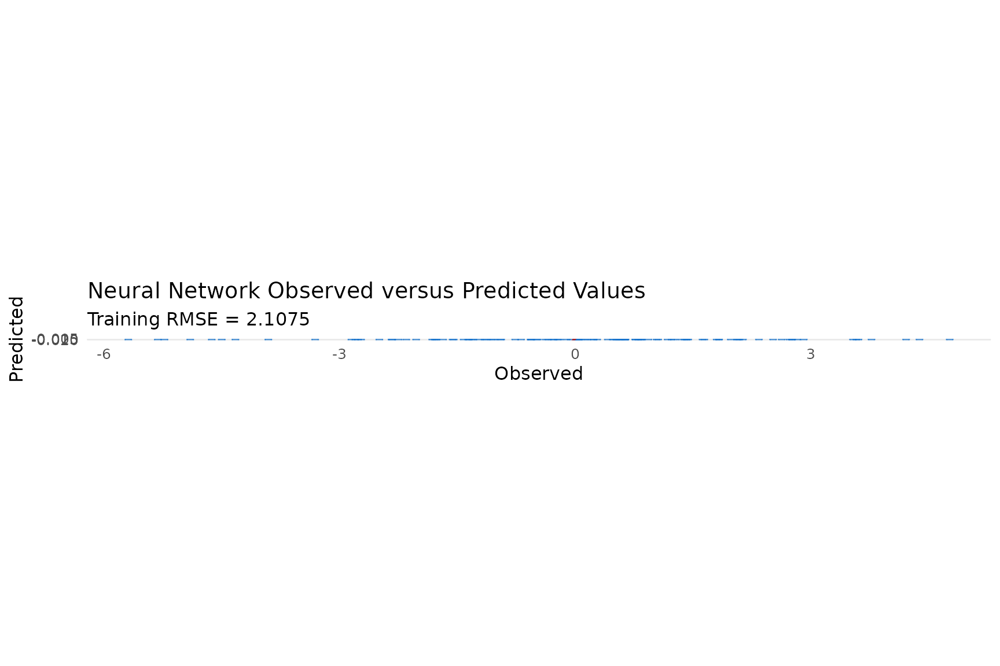
ggplot(nn_diagnostic_data, aes(Predicted, Error)) +
geom_hline(
yintercept = 0,
colour = "firebrick",
linetype = "dashed",
linewidth = 0.8
) +
geom_point(alpha = 0.7, colour = "purple4") +
theme_minimal(base_size = 12) +
labs(
title = "Neural Network Residuals",
x = "Predicted",
y = "Prediction error (observed - predicted)"
)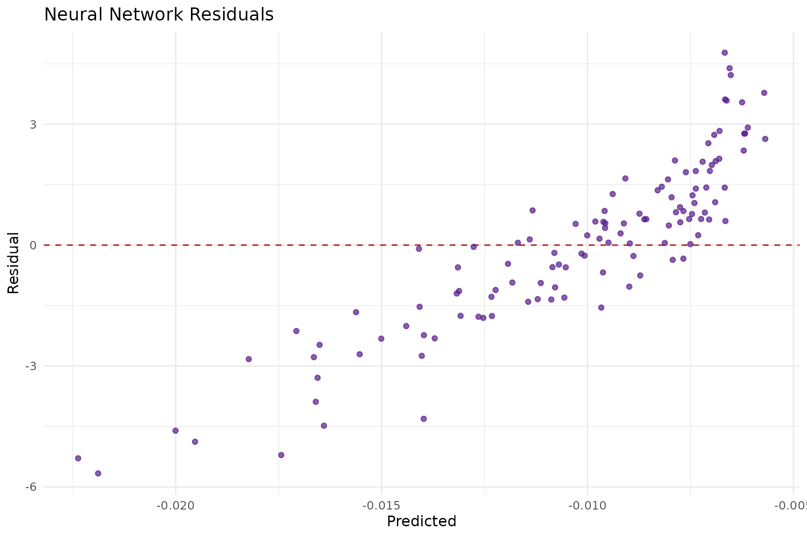
nn_mean_error <- mean(nn_diagnostic_data$Error)
nn_median_error <- median(nn_diagnostic_data$Error)
ggplot(nn_diagnostic_data, aes(Error)) +
geom_histogram(
bins = 20,
fill = "dodgerblue3",
colour = "white",
alpha = 0.85
) +
geom_vline(
xintercept = 0,
colour = "black",
linetype = "dashed",
linewidth = 0.9
) +
geom_vline(
xintercept = nn_mean_error,
colour = "firebrick",
linewidth = 0.9
) +
theme_minimal(base_size = 12) +
labs(
title = "Neural Network Prediction-Error Distribution",
subtitle = paste(
"Mean error =", round(nn_mean_error, 4),
"| Median error =", round(nn_median_error, 4)
),
x = "Prediction error (observed - predicted)",
y = "Count"
)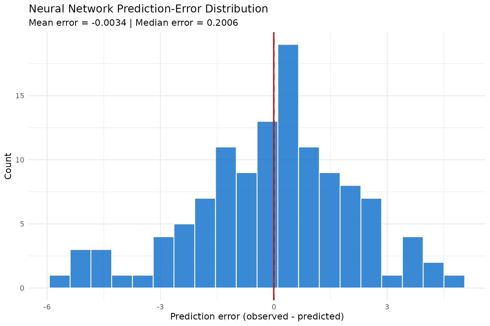
ggplot(nn_diagnostic_data, aes(sample = Error)) +
stat_qq(alpha = 0.7, colour = "dodgerblue3", size = 1.8) +
stat_qq_line(
colour = "firebrick",
linetype = "dashed",
linewidth = 0.8
) +
theme_minimal(base_size = 12) +
labs(
title = "Neural Network Residual Q-Q Plot",
subtitle = paste(
"Residual mean =", round(mean(nn_diagnostic_data$Error), 4),
"| Residual SD =", round(sd(nn_diagnostic_data$Error), 4)
),
x = "Theoretical normal quantiles",
y = "Observed residual quantiles"
)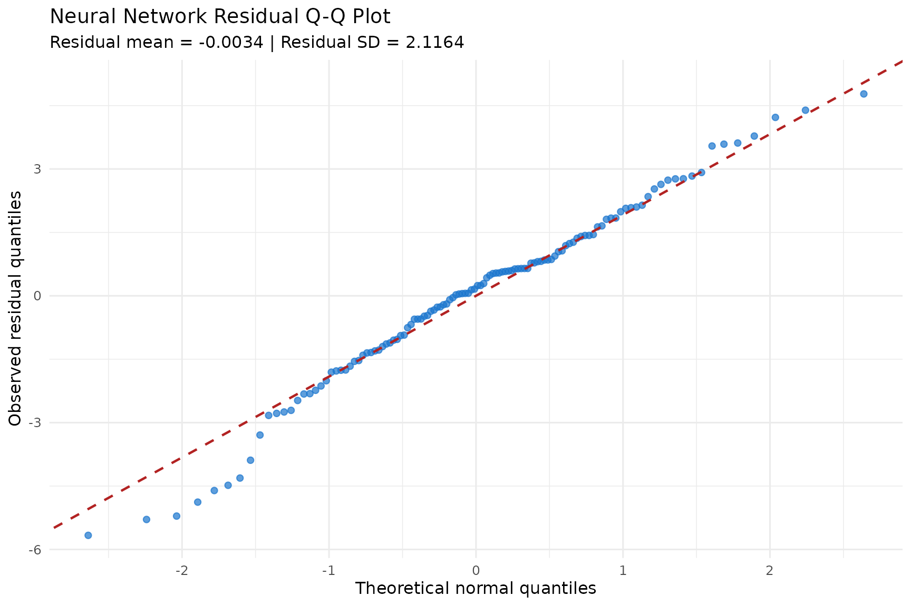
Training-set error comparison
This section compares predictions made on the same observations used to fit each model. These values describe training-set fit and should not be interpreted as estimates of performance on new observations. A flexible model can achieve small training error while generalizing poorly. The later out-of-fold comparison is therefore more informative for predictive comparison.
regression_error_comparison <- rbind(
data.frame(
Model = "Random forest",
Observed = y_reg,
Predicted = rf_reg_prediction
),
data.frame(
Model = "Gradient boosting",
Observed = y_reg,
Predicted = gbm_prediction
),
data.frame(
Model = "Neural network",
Observed = y_reg,
Predicted = nn_prediction
)
)
regression_error_comparison$Error <- with(
regression_error_comparison,
Observed - Predicted
)
regression_error_comparison$AbsoluteError <- abs(regression_error_comparison$Error)
regression_error_comparison$SquaredError <- regression_error_comparison$Error^2
regression_error_summary <- do.call(
rbind,
lapply(
split(regression_error_comparison, regression_error_comparison$Model),
function(model_data) {
data.frame(
Model = model_data$Model[1],
MeanError = mean(model_data$Error),
MedianError = median(model_data$Error),
MAE = mean(model_data$AbsoluteError),
RMSE = sqrt(mean(model_data$SquaredError)),
ErrorSD = sd(model_data$Error)
)
}
)
)
regression_error_summary <- regression_error_summary[
order(regression_error_summary$RMSE),
,
drop = FALSE
]
row.names(regression_error_summary) <- NULL
knitr::kable(
regression_error_summary,
digits = 4,
caption = "Training-set regression error comparison"
)| Model | MeanError | MedianError | MAE | RMSE | ErrorSD |
|---|---|---|---|---|---|
| Random forest | -0.0041 | -0.0057 | 0.3806 | 0.4591 | 0.4610 |
| Gradient boosting | 0.0000 | -0.0105 | 0.5952 | 0.7449 | 0.7481 |
| Neural network | -0.0034 | 0.2006 | 1.6286 | 2.1075 | 2.1164 |
model_mean_errors <- aggregate(
Error ~ Model,
data = regression_error_comparison,
FUN = mean
)
ggplot(regression_error_comparison, aes(Error)) +
geom_histogram(
bins = 20,
fill = "steelblue",
colour = "white",
alpha = 0.85
) +
geom_vline(
xintercept = 0,
colour = "black",
linetype = "dashed",
linewidth = 0.8
) +
geom_vline(
data = model_mean_errors,
aes(xintercept = Error),
colour = "firebrick",
linewidth = 0.8
) +
facet_wrap(~ Model, ncol = 1, scales = "fixed") +
theme_minimal(base_size = 12) +
labs(
title = "Training-Set Prediction-Error Distributions",
subtitle = "Dashed lines mark zero; red lines mark model-specific means",
x = "Prediction error",
y = "Count"
)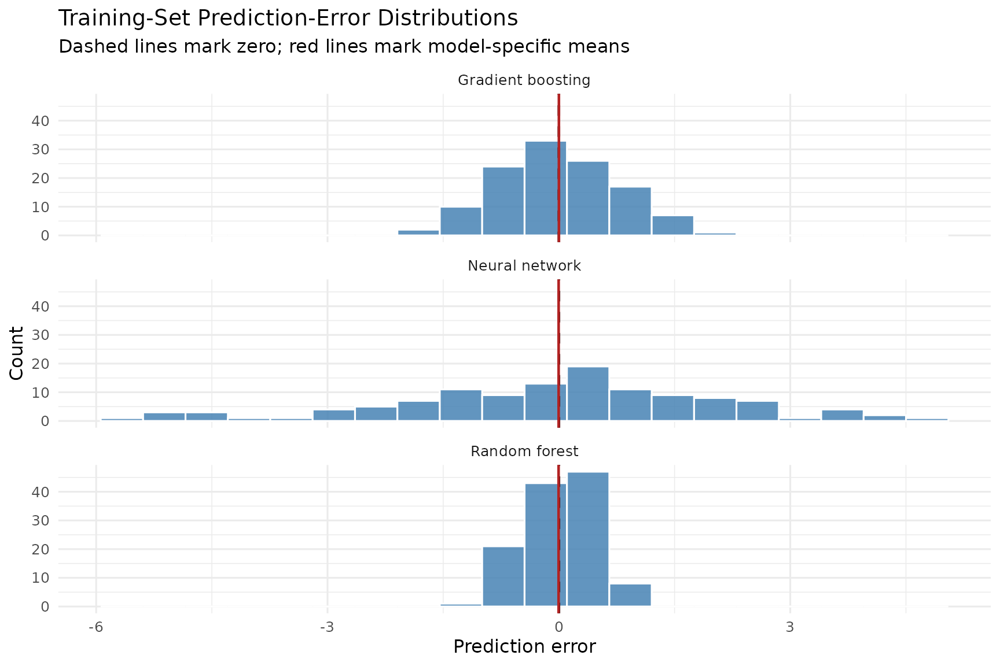
ggplot(
regression_error_comparison,
aes(
x = reorder(Model, AbsoluteError, FUN = median),
y = AbsoluteError,
fill = Model
)
) +
geom_boxplot(
width = 0.65,
alpha = 0.8,
outlier.alpha = 0.65,
show.legend = FALSE
) +
coord_flip() +
theme_minimal(base_size = 12) +
labs(
title = "Absolute Training Error by Regression Model",
x = NULL,
y = "Absolute prediction error"
)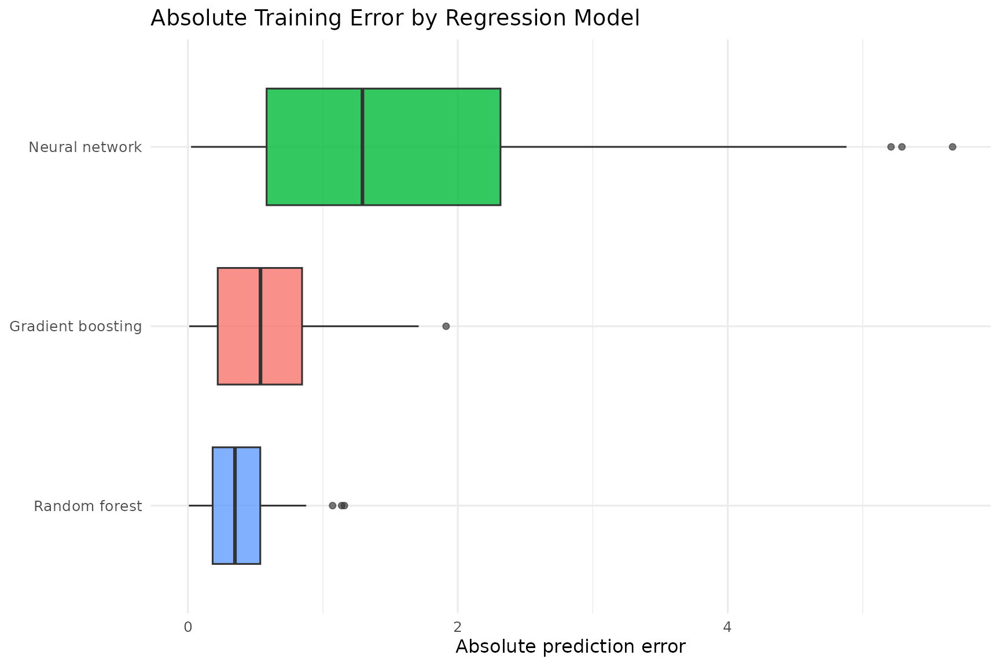
Model tuning and validation
Cross-validation setup
A three-fold cross-validation design is used to balance computational cost with out-of-fold evaluation. Each observation is assigned to one validation fold. For each iteration, two folds are used for training and the remaining fold is used for validation.
For neural networks, predictor centers and scales are estimated separately from each training fold and then applied to the corresponding validation fold.
Learning-rate analysis
The learning rate controls how aggressively each model updates during training. Values that are too small may produce insufficient learning for the selected number of iterations. Values that are too large may cause unstable updates or poor generalization. The following analyses hold the remaining hyperparameters fixed and vary only the learning rate.
Gradient boosting learning rate
For each candidate learning rate, a 50-tree gradient boosting model is evaluated using the same three folds. Mean validation RMSE summarizes predictive error, while the standard deviation shows variability across folds.
gbm_learning_rate_values <- c(0.005, 0.01, 0.05, 0.10, 0.20)
gbm_learning_rate_results <- do.call(
rbind,
lapply(seq_along(gbm_learning_rate_values), function(rate_index) {
current_rate <- gbm_learning_rate_values[rate_index]
fold_rmse <- numeric(n_folds)
for (fold in seq_len(n_folds)) {
training_rows <- fold_id != fold
validation_rows <- fold_id == fold
set.seed(4000 + rate_index * 100 + fold)
model <- gradboostr_fit(
X_reg[training_rows, , drop = FALSE],
y_reg[training_rows],
method = "gbm",
learning_rate = current_rate,
n_trees = 50
)
prediction <- as.vector(
gradboostr_predict(
model,
X_reg[validation_rows, , drop = FALSE],
type = "response"
)
)
fold_rmse[fold] <- rmse(y_reg[validation_rows], prediction)
}
data.frame(
Model = "Gradient boosting",
LearningRate = current_rate,
MeanRMSE = mean(fold_rmse),
SDRMSE = sd(fold_rmse)
)
})
)
gbm_learning_rate_results <- gbm_learning_rate_results[
order(gbm_learning_rate_results$MeanRMSE),
]
row.names(gbm_learning_rate_results) <- NULL
knitr::kable(
gbm_learning_rate_results,
digits = 4,
caption = "Gradient boosting learning-rate results"
)| Model | LearningRate | MeanRMSE | SDRMSE |
|---|---|---|---|
| Gradient boosting | 0.200 | 0.8570 | 0.0867 |
| Gradient boosting | 0.100 | 0.9300 | 0.0723 |
| Gradient boosting | 0.050 | 1.1161 | 0.0983 |
| Gradient boosting | 0.010 | 1.7113 | 0.1444 |
| Gradient boosting | 0.005 | 1.8834 | 0.1295 |
ggplot(gbm_learning_rate_results, aes(LearningRate, MeanRMSE)) +
geom_errorbar(
aes(
ymin = pmax(MeanRMSE - SDRMSE, 0),
ymax = MeanRMSE + SDRMSE
),
width = 0.003,
colour = "grey40"
) +
geom_line(colour = "darkorange", linewidth = 0.8) +
geom_point(colour = "darkorange", size = 3) +
scale_x_log10(breaks = sort(gbm_learning_rate_values)) +
theme_minimal(base_size = 12) +
labs(
title = "Gradient Boosting Learning-Rate Analysis",
x = "Learning rate (log scale)",
y = "Cross-validated RMSE"
)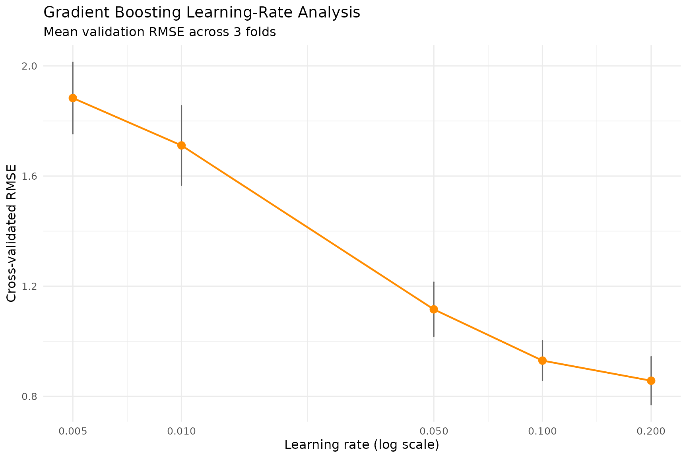
Neural network learning rate
The neural-network comparison uses 10 hidden units and 50 epochs for every candidate learning rate. Scaling is recalculated inside each training fold to prevent preprocessing leakage.
nn_learning_rate_values <- c(0.001, 0.005, 0.01, 0.05, 0.10)
nn_learning_rate_results <- do.call(
rbind,
lapply(seq_along(nn_learning_rate_values), function(rate_index) {
current_rate <- nn_learning_rate_values[rate_index]
fold_rmse <- numeric(n_folds)
for (fold in seq_len(n_folds)) {
training_rows <- fold_id != fold
validation_rows <- fold_id == fold
scaled_fold <- scale_train_validation(
X_reg[training_rows, , drop = FALSE],
X_reg[validation_rows, , drop = FALSE]
)
set.seed(5000 + rate_index * 100 + fold)
model <- gradboostr_fit(
scaled_fold$train,
y_reg[training_rows],
method = "nn",
hidden = 10,
epochs = 50,
learning_rate = current_rate
)
prediction <- as.vector(
gradboostr_predict(
model,
scaled_fold$validation,
type = "response"
)
)
fold_rmse[fold] <- rmse(y_reg[validation_rows], prediction)
}
data.frame(
Model = "Neural network",
LearningRate = current_rate,
MeanRMSE = mean(fold_rmse),
SDRMSE = sd(fold_rmse)
)
})
)
nn_learning_rate_results <- nn_learning_rate_results[
order(nn_learning_rate_results$MeanRMSE),
]
row.names(nn_learning_rate_results) <- NULL
knitr::kable(
nn_learning_rate_results,
digits = 4,
caption = "Neural-network learning-rate results"
)| Model | LearningRate | MeanRMSE | SDRMSE |
|---|---|---|---|
| Neural network | 0.100 | 0.8219 | 0.0320 |
| Neural network | 0.050 | 0.9353 | 0.0326 |
| Neural network | 0.010 | 2.1078 | 0.1162 |
| Neural network | 0.005 | 2.1082 | 0.1167 |
| Neural network | 0.001 | 2.1085 | 0.1168 |
ggplot(nn_learning_rate_results, aes(LearningRate, MeanRMSE)) +
geom_errorbar(
aes(
ymin = pmax(MeanRMSE - SDRMSE, 0),
ymax = MeanRMSE + SDRMSE
),
width = 0.002,
colour = "grey40"
) +
geom_line(colour = "dodgerblue3", linewidth = 0.8) +
geom_point(colour = "dodgerblue3", size = 3) +
scale_x_log10(breaks = sort(nn_learning_rate_values)) +
theme_minimal(base_size = 12) +
labs(
title = "Neural Network Learning-Rate Analysis",
x = "Learning rate (log scale)",
y = "Cross-validated RMSE"
)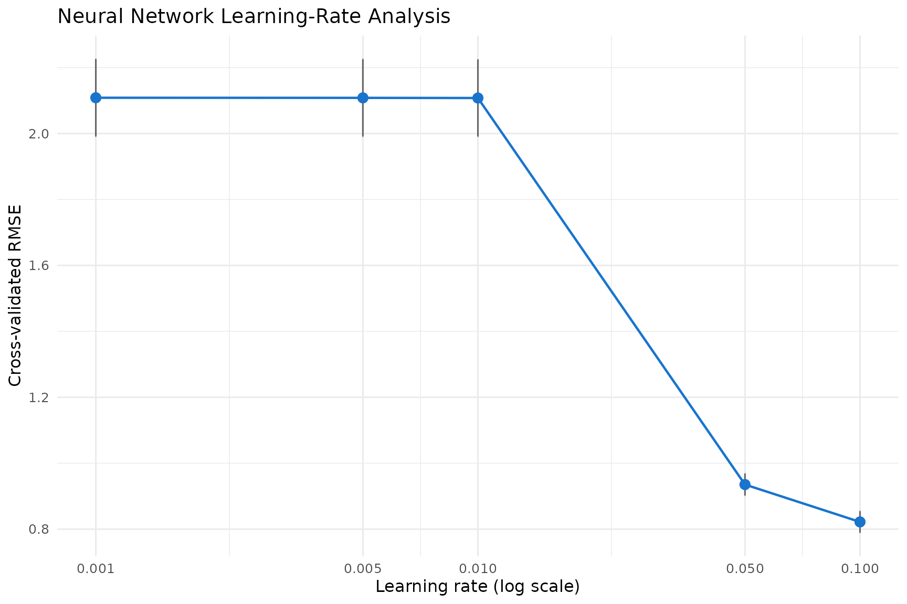
Gradient boosting grid search
The gradient boosting grid varies learning rate and tree count. The configuration with the smallest mean validation RMSE is retained for the later out-of-fold comparison.
gbm_parameter_grid <- expand.grid(
LearningRate = c(0.01, 0.05, 0.10),
Trees = c(25, 50),
KEEP.OUT.ATTRS = FALSE,
stringsAsFactors = FALSE
)
gbm_cv_results <- do.call(
rbind,
lapply(seq_len(nrow(gbm_parameter_grid)), function(parameter_index) {
parameters <- gbm_parameter_grid[parameter_index, , drop = FALSE]
fold_rmse <- numeric(n_folds)
for (fold in seq_len(n_folds)) {
training_rows <- fold_id != fold
validation_rows <- fold_id == fold
set.seed(1000 + parameter_index * 100 + fold)
model <- gradboostr_fit(
X_reg[training_rows, , drop = FALSE],
y_reg[training_rows],
method = "gbm",
learning_rate = as.numeric(parameters$LearningRate[[1]]),
n_trees = as.integer(parameters$Trees[[1]])
)
prediction <- as.vector(
gradboostr_predict(
model,
X_reg[validation_rows, , drop = FALSE],
type = "response"
)
)
fold_rmse[fold] <- rmse(y_reg[validation_rows], prediction)
}
data.frame(
LearningRate = as.numeric(parameters$LearningRate[[1]]),
Trees = as.integer(parameters$Trees[[1]]),
MeanRMSE = mean(fold_rmse),
SDRMSE = sd(fold_rmse)
)
})
)
gbm_cv_results <- gbm_cv_results[
order(gbm_cv_results$MeanRMSE),
,
drop = FALSE
]
row.names(gbm_cv_results) <- NULL
best_gbm_parameters <- gbm_cv_results[1, , drop = FALSE]
knitr::kable(
gbm_cv_results,
digits = 4,
caption = "Gradient boosting grid-search results"
)| LearningRate | Trees | MeanRMSE | SDRMSE |
|---|---|---|---|
| 0.10 | 50 | 0.9300 | 0.0723 |
| 0.10 | 25 | 1.1064 | 0.1012 |
| 0.05 | 50 | 1.1161 | 0.0983 |
| 0.05 | 25 | 1.3638 | 0.1336 |
| 0.01 | 50 | 1.7113 | 0.1444 |
| 0.01 | 25 | 1.8829 | 0.1295 |
Neural network grid search
Cross-validated compact grid
The compact grid evaluates hidden units, epochs, and learning rate using three-fold cross-validation. The configuration with the smallest mean validation RMSE is retained for the later out-of-fold comparison.
nn_parameter_grid <- expand.grid(
HiddenUnits = c(5, 10),
Epochs = c(25, 50),
LearningRate = c(0.01, 0.05),
KEEP.OUT.ATTRS = FALSE,
stringsAsFactors = FALSE
)
nn_cv_results <- do.call(
rbind,
lapply(seq_len(nrow(nn_parameter_grid)), function(parameter_index) {
parameters <- nn_parameter_grid[parameter_index, , drop = FALSE]
fold_rmse <- numeric(n_folds)
for (fold in seq_len(n_folds)) {
training_rows <- fold_id != fold
validation_rows <- fold_id == fold
scaled_fold <- scale_train_validation(
X_reg[training_rows, , drop = FALSE],
X_reg[validation_rows, , drop = FALSE]
)
set.seed(3000 + parameter_index * 100 + fold)
model <- gradboostr_fit(
scaled_fold$train,
y_reg[training_rows],
method = "nn",
hidden = as.integer(parameters$HiddenUnits[[1]]),
epochs = as.integer(parameters$Epochs[[1]]),
learning_rate = as.numeric(parameters$LearningRate[[1]])
)
prediction <- as.vector(
gradboostr_predict(
model,
scaled_fold$validation,
type = "response"
)
)
fold_rmse[fold] <- rmse(y_reg[validation_rows], prediction)
}
data.frame(
HiddenUnits = as.integer(parameters$HiddenUnits[[1]]),
Epochs = as.integer(parameters$Epochs[[1]]),
LearningRate = as.numeric(parameters$LearningRate[[1]]),
MeanRMSE = mean(fold_rmse),
SDRMSE = sd(fold_rmse)
)
})
)
nn_cv_results <- nn_cv_results[
order(nn_cv_results$MeanRMSE),
,
drop = FALSE
]
row.names(nn_cv_results) <- NULL
best_nn_parameters <- nn_cv_results[1, , drop = FALSE]
knitr::kable(
nn_cv_results,
digits = 4,
caption = "Neural-network grid-search results"
)| HiddenUnits | Epochs | LearningRate | MeanRMSE | SDRMSE |
|---|---|---|---|---|
| 10 | 50 | 0.05 | 0.9423 | 0.1756 |
| 5 | 50 | 0.05 | 1.0021 | 0.1724 |
| 10 | 25 | 0.05 | 2.0191 | 0.1188 |
| 5 | 25 | 0.05 | 2.0773 | 0.1271 |
| 10 | 50 | 0.01 | 2.1062 | 0.1167 |
| 5 | 50 | 0.01 | 2.1077 | 0.1164 |
| 10 | 25 | 0.01 | 2.1084 | 0.1166 |
| 5 | 25 | 0.01 | 2.1086 | 0.1164 |
nn_heatmap_data <- nn_cv_results
nn_heatmap_data$Epochs <- factor(nn_heatmap_data$Epochs)
rate_levels <- sort(unique(nn_heatmap_data$LearningRate))
nn_heatmap_data$RateLabel <- factor(
nn_heatmap_data$LearningRate,
levels = rate_levels,
labels = paste("Learning rate =", rate_levels)
)
ggplot(nn_heatmap_data, aes(HiddenUnits, Epochs, fill = MeanRMSE)) +
geom_tile(colour = "white", linewidth = 0.7) +
geom_text(aes(label = sprintf("%.3f", MeanRMSE)), size = 3.5) +
facet_wrap(~ RateLabel) +
scale_fill_viridis_c(option = "C", direction = -1) +
theme_minimal(base_size = 12) +
theme(panel.grid = element_blank()) +
labs(
title = "Neural Network Cross-Validated Grid Search",
x = "Hidden units",
y = "Epochs",
fill = "CV RMSE"
)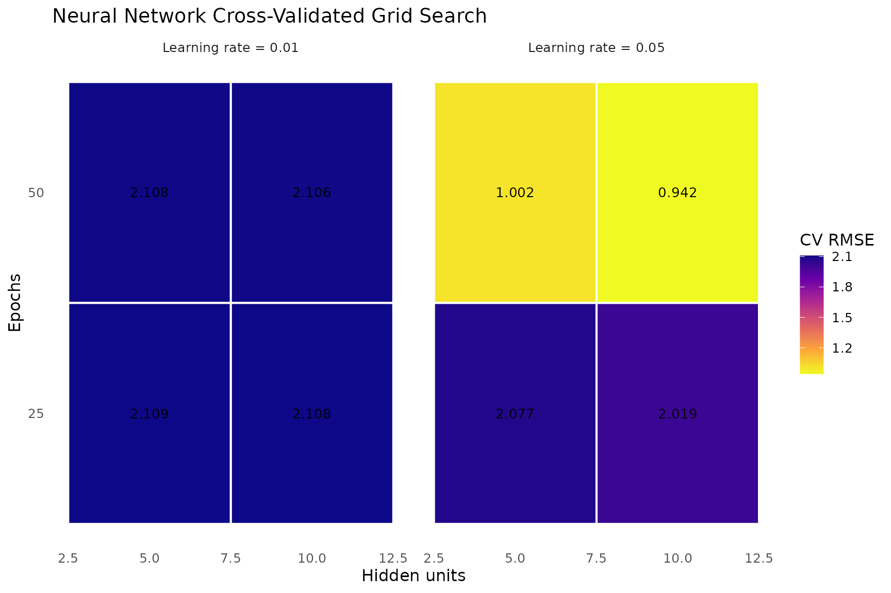
Expanded illustrative grid
The expanded grid evaluates 18 combinations using the complete scaled regression data. Its purpose is to demonstrate how a larger parameter grid can be constructed and visualized. The reported RMSE values are training errors and must not replace the preceding cross-validated grid when selecting hyperparameters for predictive use.
hidden_grid <- c(5, 10, 20)
epochs_grid <- c(40, 80)
learning_rate_grid <- c(0.10, 0.05, 0.01)
expanded_nn_grid <- expand.grid(
HiddenUnits = hidden_grid,
Epochs = epochs_grid,
LearningRate = learning_rate_grid,
KEEP.OUT.ATTRS = FALSE,
stringsAsFactors = FALSE
)
expanded_nn_results <- lapply(seq_len(nrow(expanded_nn_grid)), function(i) {
hidden_units <- expanded_nn_grid$HiddenUnits[i]
epochs <- expanded_nn_grid$Epochs[i]
learning_rate <- expanded_nn_grid$LearningRate[i]
set.seed(6000 + i)
model <- gradboostr_fit(
X_reg_scaled,
y_reg,
method = "nn",
hidden = hidden_units,
epochs = epochs,
learning_rate = learning_rate
)
prediction <- gradboostr_predict(
model,
X_reg_scaled,
type = "response"
)
data.frame(
HiddenUnits = hidden_units,
Epochs = epochs,
LearningRate = learning_rate,
RMSE = rmse(y_reg, prediction)
)
})
expanded_nn_results <- do.call(rbind, expanded_nn_results)
expanded_nn_results <- expanded_nn_results[
order(expanded_nn_results$RMSE),
,
drop = FALSE
]
row.names(expanded_nn_results) <- NULL
knitr::kable(
expanded_nn_results,
digits = 4,
caption = "Expanded neural-network training grid"
)| HiddenUnits | Epochs | LearningRate | RMSE |
|---|---|---|---|
| 10 | 80 | 0.10 | 0.7233 |
| 20 | 80 | 0.10 | 0.7297 |
| 5 | 80 | 0.10 | 0.7314 |
| 10 | 40 | 0.10 | 0.7315 |
| 20 | 80 | 0.05 | 0.7316 |
| 20 | 40 | 0.10 | 0.7330 |
| 5 | 40 | 0.10 | 0.7399 |
| 10 | 80 | 0.05 | 0.7460 |
| 5 | 80 | 0.05 | 0.7480 |
| 10 | 40 | 0.05 | 0.9476 |
| 20 | 40 | 0.05 | 0.9691 |
| 5 | 40 | 0.05 | 1.9393 |
| 20 | 80 | 0.01 | 2.0887 |
| 10 | 80 | 0.01 | 2.1060 |
| 5 | 80 | 0.01 | 2.1065 |
| 20 | 40 | 0.01 | 2.1085 |
| 10 | 40 | 0.01 | 2.1092 |
| 5 | 40 | 0.01 | 2.1105 |
lowest_training_rmse <- expanded_nn_results[1, , drop = FALSE]
knitr::kable(
lowest_training_rmse,
digits = 4,
caption = "Configuration with the lowest expanded-grid training RMSE"
)| HiddenUnits | Epochs | LearningRate | RMSE |
|---|---|---|---|
| 10 | 80 | 0.1 | 0.7233 |
expanded_nn_plot_data <- expanded_nn_results
expanded_nn_plot_data$Epochs <- factor(expanded_nn_plot_data$Epochs)
expanded_rate_levels <- sort(unique(expanded_nn_plot_data$LearningRate))
expanded_nn_plot_data$RateLabel <- factor(
expanded_nn_plot_data$LearningRate,
levels = expanded_rate_levels,
labels = paste("Learning rate =", expanded_rate_levels)
)
ggplot(expanded_nn_plot_data, aes(HiddenUnits, Epochs, fill = RMSE)) +
geom_tile(colour = "grey70", linewidth = 0.7) +
geom_text(aes(label = sprintf("%.3f", RMSE)), size = 3.5) +
facet_wrap(~ RateLabel) +
scale_x_continuous(breaks = hidden_grid) +
scale_fill_viridis_c(option = "C", direction = -1) +
theme_minimal(base_size = 12) +
theme(panel.grid = element_blank()) +
labs(
title = "Expanded Neural Network Grid",
subtitle = "Training RMSE by hidden units, epochs, and learning rate",
x = "Hidden units",
y = "Epochs",
fill = "RMSE"
)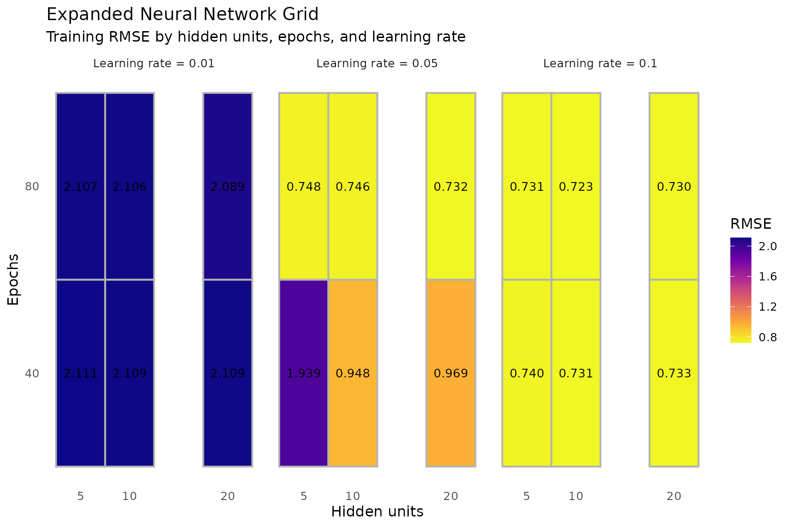
Selected hyperparameters
selection_summary <- data.frame(
Model = c("Gradient boosting", "Neural network"),
MeanRMSE = c(
best_gbm_parameters$MeanRMSE,
best_nn_parameters$MeanRMSE
),
SDRMSE = c(
best_gbm_parameters$SDRMSE,
best_nn_parameters$SDRMSE
)
)
knitr::kable(
selection_summary,
digits = 4,
caption = "Selected cross-validated regression configurations"
)| Model | MeanRMSE | SDRMSE |
|---|---|---|
| Gradient boosting | 0.9300 | 0.0723 |
| Neural network | 0.9423 | 0.1756 |
Out-of-fold error comparison
The following analysis generates one out-of-fold prediction for each observation and each regression model. Random forest uses its default settings. Gradient boosting and neural network use the configurations selected by the preceding grid searches.
The same three folds are used for both hyperparameter selection and this comparison. The resulting errors are useful for comparing the fitted workflows, but they may be optimistic because model selection and evaluation are not fully independent. Nested cross-validation or a separate test set would be required for an unbiased post-selection performance estimate.
selected_gbm_learning_rate <- as.numeric(
best_gbm_parameters$LearningRate[[1]]
)
selected_gbm_trees <- as.integer(
best_gbm_parameters$Trees[[1]]
)
selected_nn_hidden <- as.integer(
best_nn_parameters$HiddenUnits[[1]]
)
selected_nn_epochs <- as.integer(
best_nn_parameters$Epochs[[1]]
)
selected_nn_learning_rate <- as.numeric(
best_nn_parameters$LearningRate[[1]]
)
cv_prediction_results <- vector(
mode = "list",
length = n_folds * 3L
)
result_index <- 1L
for (fold in seq_len(n_folds)) {
training_rows <- fold_id != fold
validation_rows <- fold_id == fold
X_training <- X_reg[training_rows, , drop = FALSE]
y_training <- y_reg[training_rows]
X_validation <- X_reg[validation_rows, , drop = FALSE]
y_validation <- y_reg[validation_rows]
set.seed(7000 + fold)
cv_rf_model <- gradboostr_fit(
X_training,
y_training,
method = "rf"
)
cv_rf_prediction <- as.vector(
gradboostr_predict(
cv_rf_model,
X_validation,
type = "response"
)
)
cv_prediction_results[[result_index]] <- data.frame(
Observation = which(validation_rows),
Fold = fold,
Model = "Random forest",
Observed = y_validation,
Predicted = cv_rf_prediction
)
result_index <- result_index + 1L
set.seed(7100 + fold)
cv_gbm_model <- gradboostr_fit(
X_training,
y_training,
method = "gbm",
learning_rate = selected_gbm_learning_rate,
n_trees = selected_gbm_trees
)
cv_gbm_prediction <- as.vector(
gradboostr_predict(
cv_gbm_model,
X_validation,
type = "response"
)
)
cv_prediction_results[[result_index]] <- data.frame(
Observation = which(validation_rows),
Fold = fold,
Model = "Gradient boosting",
Observed = y_validation,
Predicted = cv_gbm_prediction
)
result_index <- result_index + 1L
scaled_fold <- scale_train_validation(X_training, X_validation)
set.seed(7200 + fold)
cv_nn_model <- gradboostr_fit(
scaled_fold$train,
y_training,
method = "nn",
hidden = selected_nn_hidden,
epochs = selected_nn_epochs,
learning_rate = selected_nn_learning_rate
)
cv_nn_prediction <- as.vector(
gradboostr_predict(
cv_nn_model,
scaled_fold$validation,
type = "response"
)
)
cv_prediction_results[[result_index]] <- data.frame(
Observation = which(validation_rows),
Fold = fold,
Model = "Neural network",
Observed = y_validation,
Predicted = cv_nn_prediction
)
result_index <- result_index + 1L
}
cross_validated_predictions <- do.call(rbind, cv_prediction_results)
row.names(cross_validated_predictions) <- NULL
cross_validated_predictions$Error <- with(
cross_validated_predictions,
Observed - Predicted
)
cross_validated_predictions$AbsoluteError <- abs(
cross_validated_predictions$Error
)
cross_validated_predictions$SquaredError <- (
cross_validated_predictions$Error^2
)
stopifnot(
nrow(cross_validated_predictions) == 3L * nrow(X_reg),
all(table(cross_validated_predictions$Model) == nrow(X_reg)),
all(is.finite(cross_validated_predictions$Error))
)
cross_validated_error_summary <- do.call(
rbind,
lapply(
split(cross_validated_predictions, cross_validated_predictions$Model),
function(model_data) {
fold_rmse <- vapply(
split(model_data, model_data$Fold),
function(fold_data) sqrt(mean(fold_data$SquaredError)),
numeric(1)
)
fold_mae <- vapply(
split(model_data, model_data$Fold),
function(fold_data) mean(fold_data$AbsoluteError),
numeric(1)
)
data.frame(
Model = model_data$Model[1],
MeanError = mean(model_data$Error),
MedianError = median(model_data$Error),
MAE = mean(model_data$AbsoluteError),
RMSE = sqrt(mean(model_data$SquaredError)),
FoldMeanMAE = mean(fold_mae),
FoldSDMAE = sd(fold_mae),
FoldMeanRMSE = mean(fold_rmse),
FoldSDRMSE = sd(fold_rmse)
)
}
)
)
cross_validated_error_summary <- cross_validated_error_summary[
order(cross_validated_error_summary$RMSE),
,
drop = FALSE
]
row.names(cross_validated_error_summary) <- NULL
knitr::kable(
cross_validated_error_summary,
digits = 4,
caption = paste(n_folds, "fold out-of-fold regression error comparison")
)| Model | MeanError | MedianError | MAE | RMSE | FoldMeanMAE | FoldSDMAE | FoldMeanRMSE | FoldSDRMSE |
|---|---|---|---|---|---|---|---|---|
| Neural network | 0.0118 | 0.0128 | 0.6462 | 0.8464 | 0.6462 | 0.0467 | 0.8454 | 0.0511 |
| Random forest | 0.0145 | -0.0134 | 0.7049 | 0.8834 | 0.7049 | 0.0585 | 0.8818 | 0.0633 |
| Gradient boosting | 0.0062 | 0.0077 | 0.7454 | 0.9319 | 0.7454 | 0.0558 | 0.9300 | 0.0723 |
cross_validated_metrics_long <- rbind(
data.frame(
Model = cross_validated_error_summary$Model,
Metric = "MAE",
Value = cross_validated_error_summary$MAE
),
data.frame(
Model = cross_validated_error_summary$Model,
Metric = "RMSE",
Value = cross_validated_error_summary$RMSE
)
)
ggplot(
cross_validated_metrics_long,
aes(x = reorder(Model, Value), y = Value, fill = Metric)
) +
geom_col(position = "dodge", width = 0.7) +
coord_flip() +
theme_minimal(base_size = 12) +
labs(
title = "Out-of-Fold Regression Error Comparison",
subtitle = paste("Metrics calculated from", n_folds, "fold predictions"),
x = NULL,
y = "Prediction error",
fill = "Metric"
)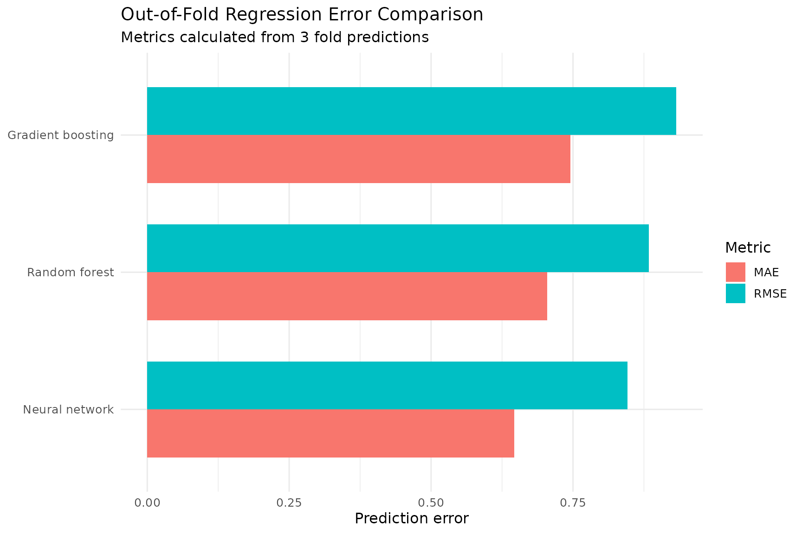
cv_model_mean_errors <- aggregate(
Error ~ Model,
data = cross_validated_predictions,
FUN = mean
)
ggplot(cross_validated_predictions, aes(Error)) +
geom_histogram(
bins = 20,
fill = "steelblue",
colour = "white",
alpha = 0.85
) +
geom_vline(
xintercept = 0,
colour = "black",
linetype = "dashed",
linewidth = 0.8
) +
geom_vline(
data = cv_model_mean_errors,
aes(xintercept = Error),
colour = "firebrick",
linewidth = 0.8
) +
facet_wrap(~ Model, ncol = 1, scales = "fixed") +
theme_minimal(base_size = 12) +
labs(
title = "Out-of-Fold Prediction-Error Distributions",
subtitle = "Dashed lines mark zero; red lines mark model-specific means",
x = "Out-of-fold prediction error",
y = "Count"
)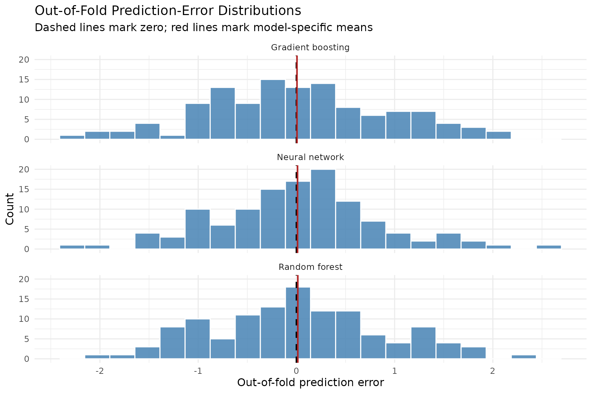
ggplot(
cross_validated_predictions,
aes(
x = reorder(Model, AbsoluteError, FUN = median),
y = AbsoluteError,
fill = Model
)
) +
geom_boxplot(
width = 0.65,
alpha = 0.8,
outlier.alpha = 0.65,
show.legend = FALSE
) +
coord_flip() +
theme_minimal(base_size = 12) +
labs(
title = "Absolute Out-of-Fold Prediction Error",
x = NULL,
y = "Absolute out-of-fold error"
)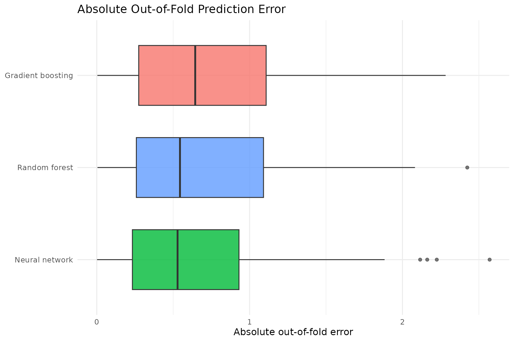
ggplot(cross_validated_predictions, aes(Observed, Predicted)) +
geom_point(alpha = 0.65, colour = "steelblue") +
geom_abline(
intercept = 0,
slope = 1,
colour = "firebrick",
linetype = "dashed",
linewidth = 0.8
) +
facet_wrap(~ Model) +
coord_equal() +
theme_minimal(base_size = 12) +
labs(
title = "Out-of-Fold Predictions by Regression Model",
subtitle = "The dashed line represents perfect agreement",
x = "Observed",
y = "Out-of-fold prediction"
)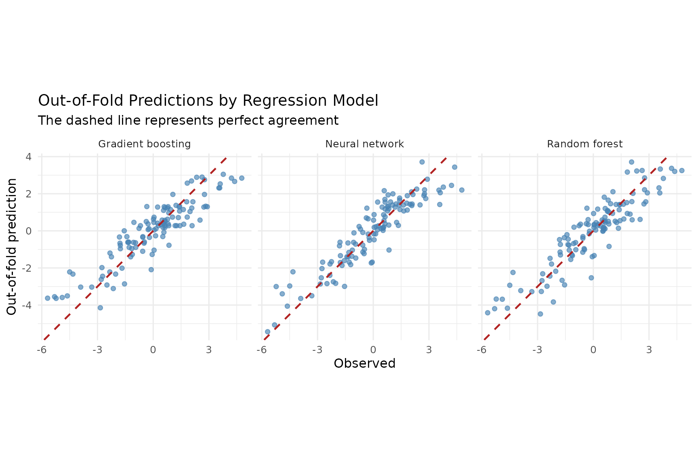
Decision stump
A decision stump is a one-split regression tree. It selects one predictor and one threshold, then assigns a constant fitted value to observations on each side of the split.
The synthetic response below contains a strong discontinuity at
X1 = 0, making it suitable for demonstrating a stump. The
package returns the selected feature, threshold, and terminal values.
The local predict_stump() helper applies those fitted
values to a predictor matrix.
set.seed(623)
n_stump <- 200L
X_stump <- cbind(
X1 = rnorm(n_stump),
X2 = rnorm(n_stump),
X3 = rnorm(n_stump)
)
y_stump <- ifelse(
X_stump[, "X1"] > 0,
3 + X_stump[, "X2"],
-3 + X_stump[, "X2"]
) + rnorm(n_stump, sd = 0.4)
stump_model <- fit_stump(X_stump, y_stump)
predict_stump <- function(X, model) {
feature <- model$feature + 1L
ifelse(
X[, feature] <= model$threshold,
model$left_val,
model$right_val
)
}
stump_prediction <- predict_stump(X_stump, stump_model)
stump_rmse <- rmse(y_stump, stump_prediction)
stump_summary <- data.frame(
FeatureIndex = stump_model$feature + 1L,
Threshold = stump_model$threshold,
LeftValue = stump_model$left_val,
RightValue = stump_model$right_val,
TrainingRMSE = stump_rmse
)
knitr::kable(
stump_summary,
digits = 4,
caption = "Fitted decision-stump parameters"
)| FeatureIndex | Threshold | LeftValue | RightValue | TrainingRMSE |
|---|---|---|---|---|
| 2 | 0.0889 | -2.6944 | 2.8725 | 3.4954 |
Binary classification
The classification examples demonstrate the fast random forest classification interface on two types of boundaries: an approximately linear boundary and a nonlinear circular boundary.
Each data set is divided into training and test partitions. The classifier is fitted using only the training partition, while accuracy metrics, confusion matrices, ROC curves, and AUC are calculated using held-out test observations.
Classification helper functions
classification_metrics() calculates threshold-dependent
metrics from hard class predictions. roc_curve_data()
evaluates sensitivity and false-positive rate across probability
thresholds. auc_from_roc() calculates trapezoidal area
under the ROC curve. confusion_plot_data() prepares
observed and predicted classes for visualization.
classification_metrics <- function(actual, predicted) {
actual <- as.integer(actual)
predicted <- as.integer(predicted)
tp <- sum(actual == 1 & predicted == 1)
tn <- sum(actual == 0 & predicted == 0)
fp <- sum(actual == 0 & predicted == 1)
fn <- sum(actual == 1 & predicted == 0)
precision <- tp / max(1, tp + fp)
recall <- tp / max(1, tp + fn)
data.frame(
Accuracy = (tp + tn) / length(actual),
Precision = precision,
Recall = recall,
Specificity = tn / max(1, tn + fp),
F1 = if (precision + recall == 0) {
0
} else {
2 * precision * recall / (precision + recall)
}
)
}
roc_curve_data <- function(actual, probability) {
thresholds <- sort(unique(c(Inf, probability, -Inf)), decreasing = TRUE)
points <- lapply(thresholds, function(threshold) {
predicted <- as.integer(probability >= threshold)
tp <- sum(actual == 1 & predicted == 1)
tn <- sum(actual == 0 & predicted == 0)
fp <- sum(actual == 0 & predicted == 1)
fn <- sum(actual == 1 & predicted == 0)
data.frame(
Threshold = threshold,
TPR = tp / max(1, tp + fn),
FPR = fp / max(1, fp + tn)
)
})
result <- do.call(rbind, points)
result[order(result$FPR, result$TPR), ]
}
auc_from_roc <- function(roc_data) {
roc_data <- roc_data[order(roc_data$FPR, roc_data$TPR), ]
sum(
diff(roc_data$FPR) *
(head(roc_data$TPR, -1) + tail(roc_data$TPR, -1)) / 2
)
}
confusion_plot_data <- function(actual, predicted) {
as.data.frame(
table(
Observed = factor(actual, levels = c(0, 1)),
Predicted = factor(predicted, levels = c(0, 1))
)
)
}Linear classification example
The response is determined by a noisy linear score based on
X1 and X2. Seventy percent of the observations
are used for training and the remaining observations are retained for
testing.
set.seed(738)
n_linear <- 500L
X_linear <- cbind(
X1 = rnorm(n_linear),
X2 = rnorm(n_linear)
)
linear_score <- (
1.25 * X_linear[, "X1"] -
0.85 * X_linear[, "X2"] +
rnorm(n_linear, sd = 0.45)
)
y_linear <- ifelse(linear_score > 0, 1, 0)
linear_train_rows <- sample(seq_len(n_linear), floor(0.70 * n_linear))
linear_test_rows <- setdiff(seq_len(n_linear), linear_train_rows)
linear_forest <- rf_class_fit_fast(
X_linear[linear_train_rows, , drop = FALSE],
y_linear[linear_train_rows],
n_trees = 100,
max_depth = 6
)
linear_probability <- as.vector(
GradBoostR::rf_class_predict_prob_fast(
X_linear[linear_test_rows, , drop = FALSE],
linear_forest
)
)
linear_prediction <- as.integer(linear_probability >= 0.5)
linear_metrics <- classification_metrics(
y_linear[linear_test_rows],
linear_prediction
)
linear_metrics
#> Accuracy Precision Recall Specificity F1
#> 1 0.9533333 0.9428571 0.9565217 0.9506173 0.9496403
linear_confusion <- confusion_plot_data(
y_linear[linear_test_rows],
linear_prediction
)
ggplot(linear_confusion, aes(Predicted, Observed, fill = Freq)) +
geom_tile(colour = "white", linewidth = 0.8) +
geom_text(aes(label = Freq), size = 5) +
scale_fill_viridis_c(option = "C") +
coord_equal() +
theme_minimal(base_size = 12) +
theme(panel.grid = element_blank()) +
labs(
title = "Linear Classification Confusion Matrix",
x = "Predicted class",
y = "Observed class",
fill = "Count"
)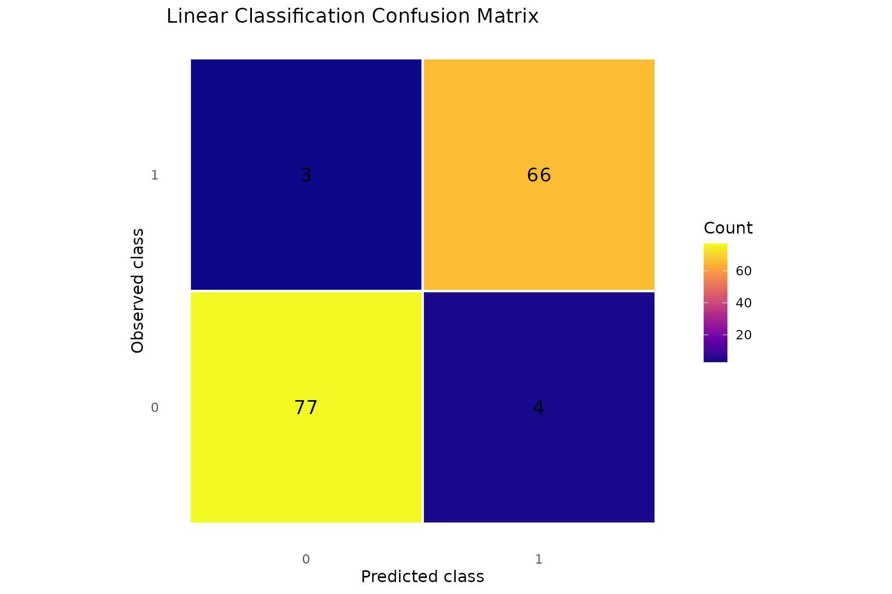
linear_roc <- roc_curve_data(
y_linear[linear_test_rows],
linear_probability
)
linear_auc <- auc_from_roc(linear_roc)
ggplot(linear_roc, aes(FPR, TPR)) +
geom_line(colour = "darkgreen", linewidth = 1) +
geom_abline(
intercept = 0,
slope = 1,
linetype = "dashed",
colour = "grey50"
) +
coord_equal() +
theme_minimal(base_size = 12) +
labs(
title = "Linear Classification ROC Curve",
subtitle = paste("Held-out AUC =", round(linear_auc, 4)),
x = "False positive rate",
y = "True positive rate"
)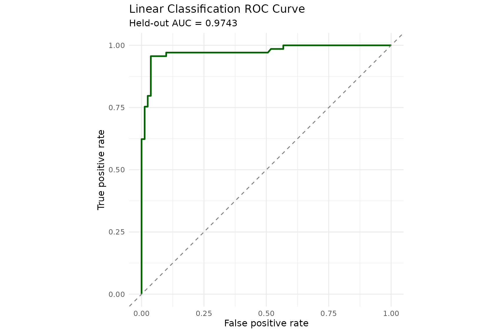
Nonlinear classification example
The nonlinear response is determined by distance from the origin. Observations inside the unit circle belong to class zero, while observations outside the circle belong to class one. This example evaluates whether the random forest can learn a curved boundary without an explicit nonlinear transformation of the predictors.
set.seed(353)
n_class <- 500L
X_class <- cbind(
X1 = rnorm(n_class),
X2 = rnorm(n_class)
)
y_class <- ifelse(
X_class[, "X1"]^2 + X_class[, "X2"]^2 > 1,
1,
0
)
nonlinear_train_rows <- sample(seq_len(n_class), floor(0.70 * n_class))
nonlinear_test_rows <- setdiff(seq_len(n_class), nonlinear_train_rows)
classification_data <- data.frame(
X1 = X_class[, "X1"],
X2 = X_class[, "X2"],
Class = factor(
y_class,
levels = c(0, 1),
labels = c("Inside", "Outside")
),
Partition = ifelse(
seq_len(n_class) %in% nonlinear_train_rows,
"Training",
"Test"
)
)
ggplot(
classification_data,
aes(X1, X2, colour = Class, shape = Partition)
) +
geom_point(alpha = 0.72) +
scale_colour_manual(
values = c("Inside" = "#2166AC", "Outside" = "#B2182B")
) +
coord_equal() +
theme_minimal(base_size = 12) +
labs(
title = "Nonlinear Binary Classification Data",
subtitle = "The true class boundary is approximately circular"
)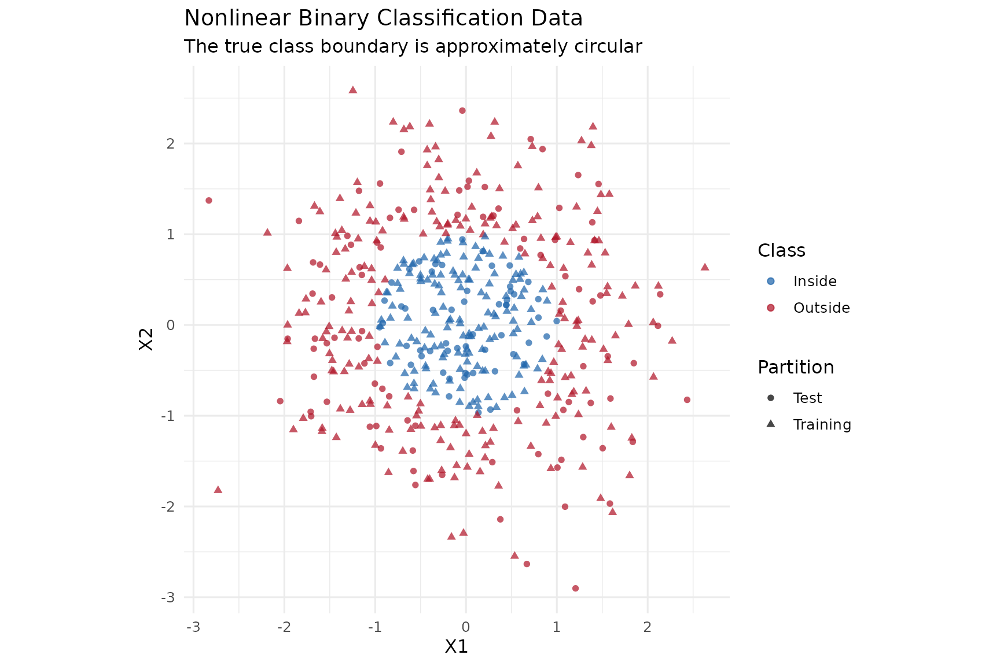
nonlinear_forest <- rf_class_fit_fast(
X_class[nonlinear_train_rows, , drop = FALSE],
y_class[nonlinear_train_rows],
n_trees = 100,
max_depth = 6
)
nonlinear_probability <- as.vector(
GradBoostR::rf_class_predict_prob_fast(
X_class[nonlinear_test_rows, , drop = FALSE],
nonlinear_forest
)
)
nonlinear_prediction <- as.integer(nonlinear_probability >= 0.5)
nonlinear_metrics <- classification_metrics(
y_class[nonlinear_test_rows],
nonlinear_prediction
)
nonlinear_metrics
#> Accuracy Precision Recall Specificity F1
#> 1 0.9466667 0.967033 0.9462366 0.9473684 0.9565217
nonlinear_confusion <- confusion_plot_data(
y_class[nonlinear_test_rows],
nonlinear_prediction
)
ggplot(nonlinear_confusion, aes(Predicted, Observed, fill = Freq)) +
geom_tile(colour = "white", linewidth = 0.8) +
geom_text(aes(label = Freq), size = 5) +
scale_fill_viridis_c(option = "C") +
coord_equal() +
theme_minimal(base_size = 12) +
theme(panel.grid = element_blank()) +
labs(
title = "Nonlinear Classification Confusion Matrix",
x = "Predicted class",
y = "Observed class",
fill = "Count"
)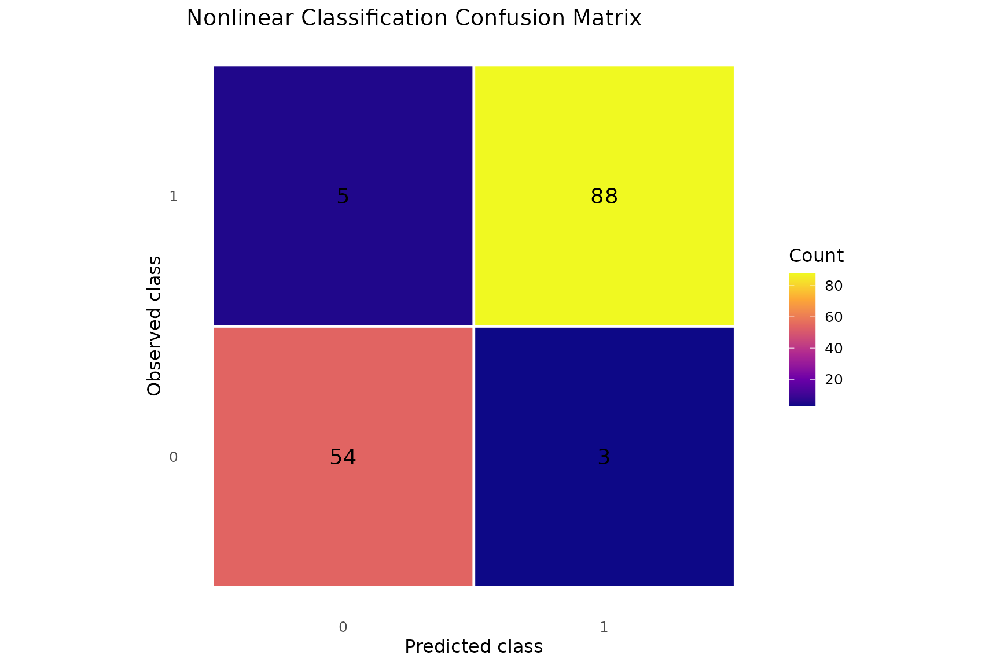
nonlinear_roc <- roc_curve_data(
y_class[nonlinear_test_rows],
nonlinear_probability
)
nonlinear_auc <- auc_from_roc(nonlinear_roc)
ggplot(nonlinear_roc, aes(FPR, TPR)) +
geom_line(colour = "dodgerblue3", linewidth = 1) +
geom_abline(
intercept = 0,
slope = 1,
linetype = "dashed",
colour = "grey50"
) +
coord_equal() +
theme_minimal(base_size = 12) +
labs(
title = "Nonlinear Classification ROC Curve",
subtitle = paste("Held-out AUC =", round(nonlinear_auc, 4)),
x = "False positive rate",
y = "True positive rate"
)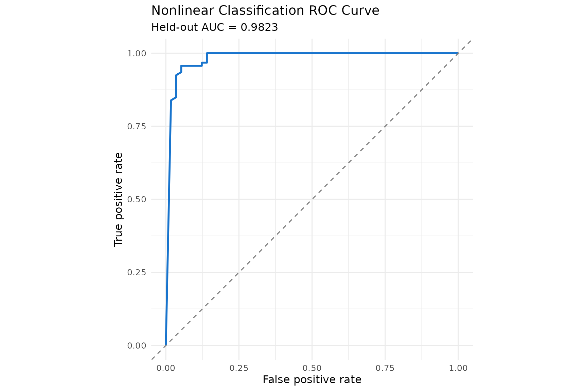
Hard-class decision regions
The hard-class plot uses the forest fitted only on the nonlinear
training partition. Every point in the grid is assigned to either the
inside or outside class. The background tiles show predicted classes.
The black contour marks the probability threshold
P(Class = 1) = 0.5.
x1_sequence <- seq(
min(X_class[, "X1"]),
max(X_class[, "X1"]),
length.out = 200
)
x2_sequence <- seq(
min(X_class[, "X2"]),
max(X_class[, "X2"]),
length.out = 200
)
decision_boundary_grid <- expand.grid(
X1 = x1_sequence,
X2 = x2_sequence
)
decision_boundary_matrix <- as.matrix(
decision_boundary_grid[, c("X1", "X2")]
)
decision_boundary_grid$PredictedClass <- as.vector(
GradBoostR::rf_class_predict_fast(
decision_boundary_matrix,
nonlinear_forest
)
)
decision_boundary_grid$Probability <- as.vector(
GradBoostR::rf_class_predict_prob_fast(
decision_boundary_matrix,
nonlinear_forest
)
)
decision_boundary_grid$PredictedClass <- factor(
decision_boundary_grid$PredictedClass,
levels = c(0, 1),
labels = c("Inside", "Outside")
)
decision_boundary_points <- data.frame(
X1 = X_class[, "X1"],
X2 = X_class[, "X2"],
TrueClass = factor(
y_class,
levels = c(0, 1),
labels = c("Inside", "Outside")
),
Partition = ifelse(
seq_len(nrow(X_class)) %in% nonlinear_train_rows,
"Training",
"Test"
)
)
ggplot() +
geom_raster(
data = decision_boundary_grid,
aes(X1, X2, fill = PredictedClass),
alpha = 0.55,
interpolate = FALSE
) +
geom_contour(
data = decision_boundary_grid,
aes(X1, X2, z = Probability),
breaks = 0.5,
colour = "black",
linewidth = 0.9
) +
geom_point(
data = decision_boundary_points,
aes(X1, X2, colour = TrueClass, shape = Partition),
inherit.aes = FALSE,
alpha = 0.8,
size = 1.5
) +
scale_fill_manual(
values = c("Inside" = "#92C5DE", "Outside" = "#F4A582")
) +
scale_colour_manual(
values = c("Inside" = "#2166AC", "Outside" = "#B2182B")
) +
coord_equal() +
theme_minimal(base_size = 12) +
labs(
title = "Random Forest Decision Regions",
subtitle = "The black line shows P(Class = 1) = 0.5",
fill = "Predicted class",
colour = "True class",
shape = "Partition"
)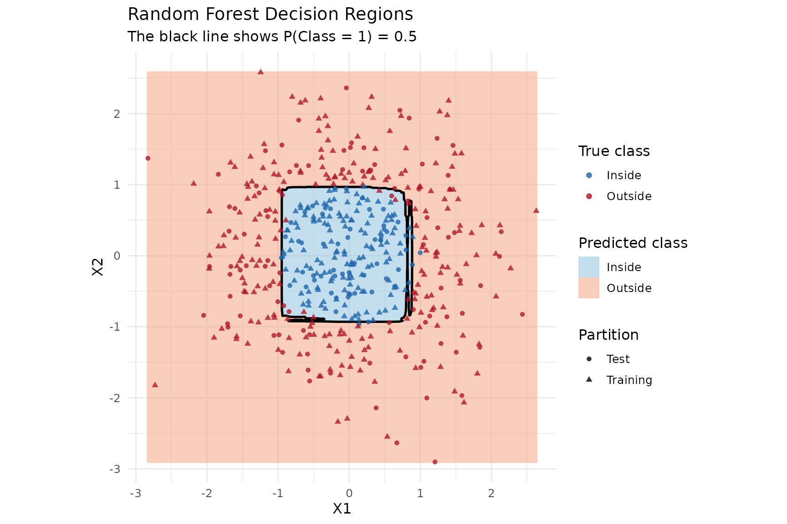
Probability surface
For visualization only, a second forest is fitted to the complete nonlinear data set. The resulting surface shows how estimated class-one probability changes over the two-dimensional predictor space. This complete-data model is not used to calculate performance metrics.
classification_surface_forest <- rf_class_fit_fast(
X_class,
y_class,
n_trees = 100,
max_depth = 6
)
classification_grid <- expand.grid(
X1 = seq(
min(classification_data$X1),
max(classification_data$X1),
length.out = 150
),
X2 = seq(
min(classification_data$X2),
max(classification_data$X2),
length.out = 150
)
)
classification_grid$Probability <- as.vector(
GradBoostR::rf_class_predict_prob_fast(
as.matrix(classification_grid[, c("X1", "X2")]),
classification_surface_forest
)
)
ggplot() +
geom_raster(
data = classification_grid,
aes(X1, X2, fill = Probability),
interpolate = FALSE
) +
geom_contour(
data = classification_grid,
aes(X1, X2, z = Probability),
breaks = c(0.1, 0.3, 0.5, 0.7, 0.9),
colour = "white",
linewidth = 0.45
) +
geom_contour(
data = classification_grid,
aes(X1, X2, z = Probability),
breaks = 0.5,
colour = "black",
linewidth = 0.9
) +
geom_point(
data = classification_data,
aes(X1, X2, colour = Class),
alpha = 0.65,
size = 1.3
) +
scale_fill_viridis_c(limits = c(0, 1), name = "P(Class = 1)") +
scale_colour_manual(
values = c("Inside" = "#2166AC", "Outside" = "#B2182B")
) +
coord_equal() +
theme_minimal(base_size = 12) +
labs(
title = "GradBoostR Classification Probability Surface",
subtitle = "The black contour is the P(Class = 1) = 0.5 boundary"
)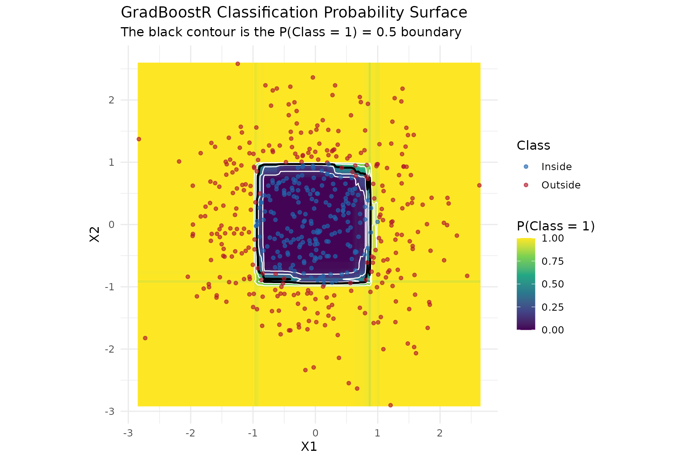
Classification performance comparison
The final table compares the two held-out classification examples.
Accuracy and F1 use the fixed probability threshold of 0.5.
AUC summarizes ranking performance across all evaluated thresholds.
classification_comparison <- rbind(
data.frame(
Example = "Linear boundary",
linear_metrics,
AUC = linear_auc
),
data.frame(
Example = "Circular boundary",
nonlinear_metrics,
AUC = nonlinear_auc
)
)
knitr::kable(
classification_comparison,
digits = 4,
caption = "Held-out classification performance"
)| Example | Accuracy | Precision | Recall | Specificity | F1 | AUC |
|---|---|---|---|---|---|---|
| Linear boundary | 0.9533 | 0.9429 | 0.9565 | 0.9506 | 0.9496 | 0.9743 |
| Circular boundary | 0.9467 | 0.9670 | 0.9462 | 0.9474 | 0.9565 | 0.9823 |
Summary
This vignette demonstrated the principal GradBoostR
workflows:
- fitting random forest, gradient boosting, and neural network
regression models through
gradboostr_fit(); - generating regression predictions through
gradboostr_predict(); - validating prediction dimensions and finite outputs;
- examining training-set residuals and prediction-error distributions;
- scaling neural-network predictors without leaking validation information;
- comparing learning rates and hyperparameter grids;
- generating out-of-fold predictions for regression-model comparison;
- fitting and interpreting a one-split decision stump;
- fitting binary random forest classifiers;
- evaluating classifiers using held-out confusion matrices, ROC curves, and AUC;
- visualizing hard-class decision regions and class-probability surfaces.
Training-set diagnostics explain fitted-model behavior, but they do not estimate performance on new observations. Out-of-fold and held-out results provide more informative predictive comparisons. Because the same folds are used for selecting and comparing regression configurations, nested cross-validation or an independent test set would be needed for a fully independent post-selection estimate.
The unified regression interface provides a consistent workflow across model types:
model <- gradboostr_fit(
x,
y,
method = "gbm"
)
prediction <- gradboostr_predict(
model,
newdata,
type = "response"
)Specialized lower-level functions provide decision-stump fitting and fast random forest classification.